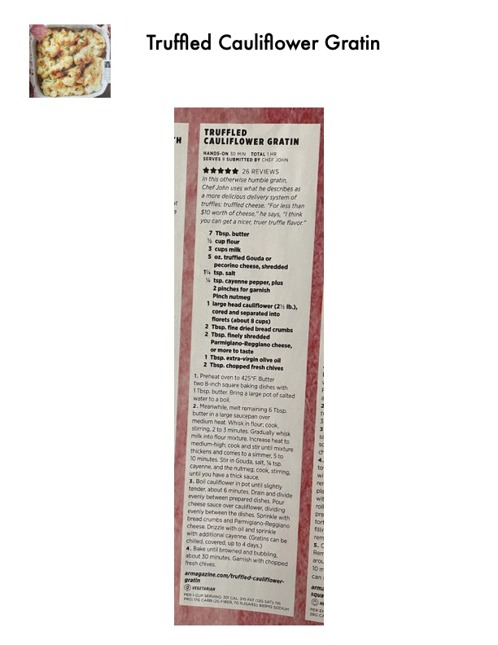

Truffled Cauliflower Gratin

Original cookbook page 182
In this otherwise humble gratin, Chef John uses what he describes as a more delicious delivery system of truffle: truffled cheese. "For less than $10 worth of cheese," he says, "I think you can get a nicer, truer truffle flavor."
Prep: 30 minutes • Cook: 30 minutes • Total: 1 hour
Ingredients
- 7 Tbsp. butter
- ⅓ cup flour
- 3 cups milk
- 5 oz. truffled Gouda or pecorino cheese, shredded
- 1½ tsp. salt
- ¼ tsp. cayenne pepper, plus 2 pinches for garnish
- Pinch nutmeg
- 1 large head cauliflower (2½ lb.), cored and separated into florets (about 8 cups)
- 2 Tbsp. fine dried bread crumbs
- 2 Tbsp. finely shredded Parmigiano-Reggiano cheese, or more to taste
- 1 Tbsp. extra-virgin olive oil
- 2 Tbsp. chopped fresh chives
Instructions
- Preheat oven to 425°F. Butter two 8-inch square baking dishes with 1 Tbsp. butter. Bring a large pot of salted water to a boil.
- Meanwhile, melt remaining 6 Tbsp. butter in a large saucepan over medium heat. Whisk in flour; cook, stirring, 2 to 3 minutes. Gradually whisk milk into flour mixture. Increase heat to medium-high; cook and stir until mixture thickens and comes to a simmer, 5 to 10 minutes. Stir in Gouda, salt, ¼ tsp. cayenne, and the nutmeg; cook, stirring, until you have a thick sauce.
- Boil cauliflower in pot until slightly tender, about 6 minutes. Drain and divide evenly between prepared dishes. Pour cheese sauce over cauliflower, dividing evenly between the dishes. Sprinkle with bread crumbs and Parmigiano-Reggiano cheese. Drizzle with oil and sprinkle with additional cayenne. (Gratins can be chilled, covered, up to 4 days.)
- Bake until browned and bubbling, about 30 minutes. Garnish with chopped fresh chives.
Recipe #182 from collection